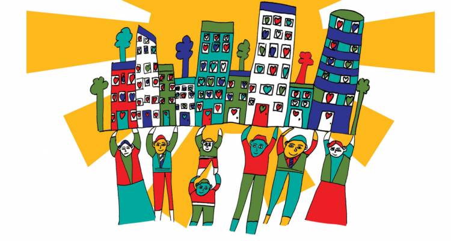

Reanna George
Picture from https://projectcitizenship.com/meet-artist-designed-project-citizenship-logo/
Citizenship is the position or status of being a citizen of a particular country. But how can you be a good citizen? Well to be a good citizen you need honesty, compassion, respect, responsibility and courage.
Honesty is being truthful and sincere. It isn't the most important component of being a good citizen because there are things you want to keep to your self that are personal and at times it may even be best to bend the truth a little, like a white lie. However when you know things or do things it is best to be honest about the situation because it makes things simpler and sometimes it's in the best interest for everyone.
Compassion is sympathetic pity and concern for the misfortune of others. Compassion is important because when you're compassionate you can really connect with others and it leads you or makes you want to helps others.
Respecting someone is admiring them elicitied by their abilities, qualities etc. Being respectful is a neccesity for being a good citizen because without respect you won't have good relationships in your community. When you respect others, others respect you. Respect brings trust and support.
Responsibility is being accountable for something. It's like having a duty. Responsibility is a big contribution to being a good citizen. Being a citizen is being a part of a community, you have to lend a hand whether it's paying taxes or voting. Without responsibilities the community can't function for the citizens.
Courage is a big factor of being a good citizen. As a citizen you have to stand up for what you and even others believe in. Express your voice because if you don't you and your acquantinces, will not be acknowldeged.
Consideration is thoughfulness and sensitivity towards others. This is vitile to good citizen ship because when you help other out and are considerate to t heir feelings it can make a huge impact on theit life and even people around them. When you're considerate to others they might feel as though they should also help out someone else, it's can become a never ending cycle making the community a better and closer environment.
So how can you perform a powerful act of citizenship? There are many ways you can, recently my friends and I went around a public park and picked up all the litter we could find. As a citizen we are considering how the litter can affect the environment and then being responsible and picking it up. You can make many acts of good citizenship using all of these traits.
Definitions from the google dictionary.
My Contract